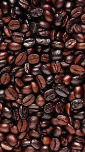

Coffee is a beloved beverage known for its ability to fine-tune your focus and boost your energy levels. In fact, many people depend on their daily cup of joe right when they wake up to get their day started on the right foot. In addition to its energizing effects, coffee has been linked to a long list of potential health benefits, giving you all the more reason to get brewing. This article takes an in-depth look at 9 of the top evidence-based benefits of coffee.
|

Arabica
|
Arabica- Arabica contains almost 60% more lipids and almost twice the amount of sugar. These play an important part in not only the flavor, but the aroma and body of the coffee. Arabica beans taste better because the increase in sugar gives the coffee a better taste, a cleaner mouthfeel, and a decrease in bitterness.
Robusta- Growing at a variety of climates and altitudes, robusta coffee is a hardy plant that may be the key to sustainable coffee production in the future. With natural pest resistance due to its high caffeine content, robusta coffee is also a more environmentally friendly crop that requires less or no pesticides.
Liberica- Liberica coffee is definitely one of the sweetest coffee on earth Absolutely flavourful, thick jammy juiciness and super duper intense sweetness, way sweeter than most arabica & robusta
Excelsa- The taste of Excelsa coffee shares characteristics with both high and low-altitude coffees. It has a sweet, fruity, tart quality but is strong and dark. Producers are often used to add depth of flavor and a fuller body to coffee blends.